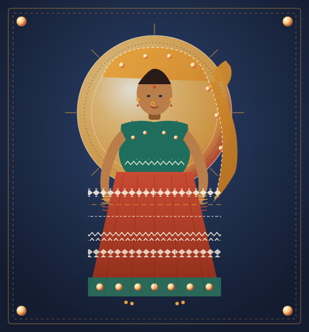
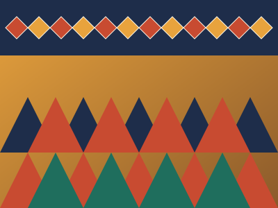
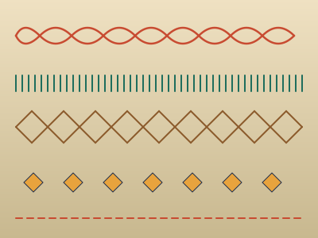

Cushion Cover
Nakra Diamond
16″ × 16″ · cotton khadi · hand-stitched Nakra grid in saffron & indigo.
₹ 1,450 onwards
Enquire →
बंजारा · नमदी धागे · मरुभूमि की चित्रकला
A nomadic art of the Thar desert — stitched in memory, lit by mirrors, carried in the folds of an odhni.

The Banjara — known also as Lamani or Lambadi — are a semi-nomadic people of Rajasthan, descended from the Rajputs, whose embroidery was never a hobby but a passport, a dowry, and a home one could wear. Their cloth is made of khadi, fourteen named stitches, and a scatter of small mirrors said to keep even a tiger at bay.
Pieces stitched by hand at Banjara workshops, carried to melas, and waiting for a home. Every piece is a chapter of the craft.
16″ × 16″ · cotton khadi · hand-stitched Nakra grid in saffron & indigo.
Canvas tote with seven embroidered shisha mirrors and a looped handle. Fits a book and a bottle of water.

Quilted cotton jacket with bold Banjara geometry, mirror-work collar, and ghungroo bells along the hem.

24″ × 18″ framed panel showing all fourteen traditional stitches in one cloth. A teaching piece.
Please note Prices are indicative; each piece is unique. Enquiries are forwarded to the artisan group directly — we earn nothing on the sale.
The designs are bold and immediate — almost instantly identifiable.
Maiwa · on Banjara embroideryOrigins, the fourteen stitches, colour, meaning, and where the needle moves next — in one chapter.
Read the full story →